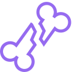
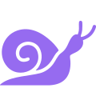
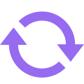

Polaris API Designer
Overview
As a data analytics company, 84.51° profits off the development of APIs. However there's a problem. API developers at the company each have their own process to build an API, which results in a lack of standards, which in turn results in a subpar product. Polaris is an API creator tool designed to make it easier for developers and non-developers alike to build APIs. The Polaris API Designer is just one part of the tool that lets developers mock up and share API designs before they have to write a single line of code.
Going from "I'm in Hell" to "That would be dope as Hell."Real quotes from user research
So what even is an API…?
An API is an Application Programming Interface. Does that clear things up? Probably not — it took me a while to get a handle on what APIs are and how they drive revenue.
To help understand what an API is in the context of this project, I've developed the soda fountain metaphor. 84.51° employees are masters of working with data, just as Coca-Cola employees are masters of making soda. The customer, however, doesn't care about what's going on behind the scenes. They just want to get their nice filtered Kroger shopping data, or cup of Diet Coke, when they ask for it.
That's when the API comes in. It's a contract of code between us and the customer. You pay and put your cup under Minute Maid and you'll get lemonade. You send us this message and you'll get this array of data.
The Problem: At 84.51° API development is…
Fractured
Each developer has their own process and standard of API development, which makes collaboration difficult.
Slow
The time to build APIs for customers is much slower than the competition, which is leaving revenue on the table.
Repetitive
Each time a new API is built it requires timely, boilerplate steps — such as creating a GitHub repo — that could be easily automated.
Initial research question
What steps do 84.51° developers take to build an API?
Before designing anything, I mapped how developers actually build an API today — every step, hand-off and workaround — then synthesized the interviews into themes.
The Polaris API Designer
A tool for developers and non-developers alike to design, mock, and share APIs.



Usability Testing
Research question
Are users of the Polaris API Designer able to discover and use all the features that the platform provides?
Research methods
At the beginning of the engagement, participants are told that after they have time to explore the prototype the researcher will ask them to explain what the Polaris API Designer does to help a user build better APIs faster. They have as much time as they would like to explore the prototype. The researcher has their camera on but is watching, and can answer questions. Afterwards the participant is asked, "Explain to me what the Polaris API Designer is capable of." Their responses are graded against a rubric.
Value Testing
Research question
Are the features of the Polaris API Designer the features that our developers need to create better APIs faster?
Research methods
After the usability testing, the participant is asked if they would be willing to join the beta program for early access. In exchange, we ask them to participate in further opportunities to give feedback. Finally, participants are asked if they could give the names of three people the research could send additional meeting invites to.
Testing Highlights
100%
of the 1-on-1 participants were able to identify and understand the scorecard, reusable library, and publishing features.
100%
of the 1-on-1 participants were not just interested but excited about joining a beta program.
88%± 10.69%
of asynchronous participants in technical roles were open to joining a beta program.